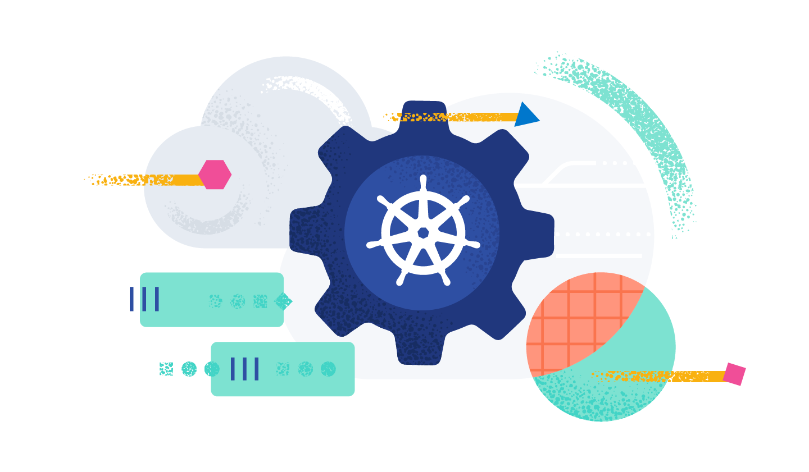
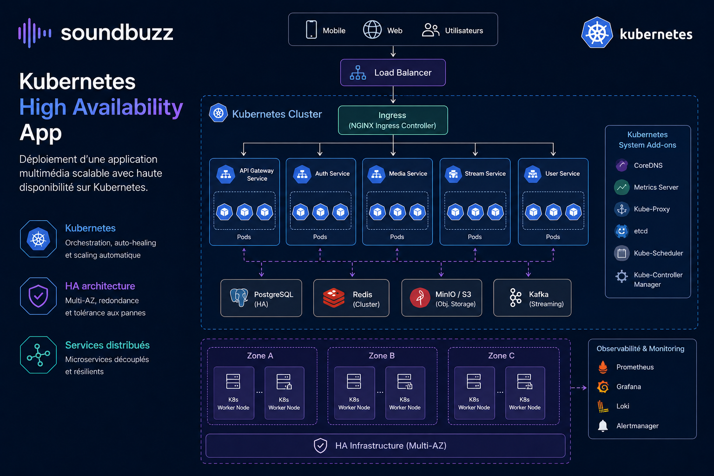
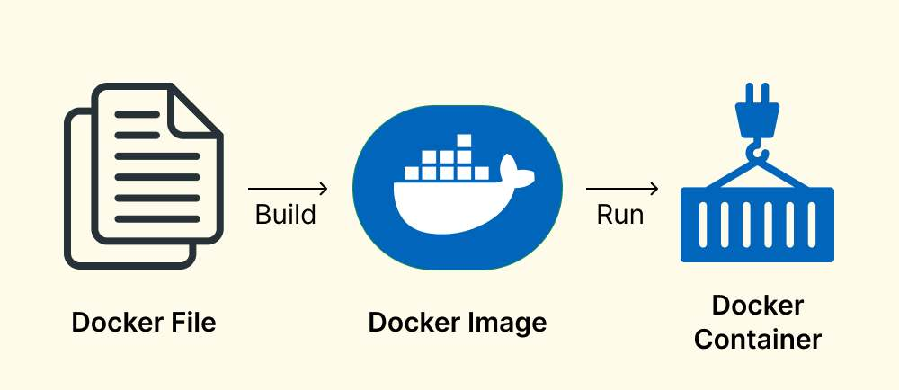
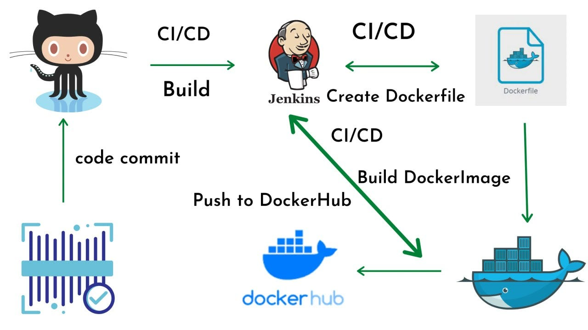
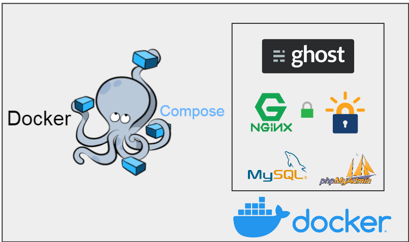
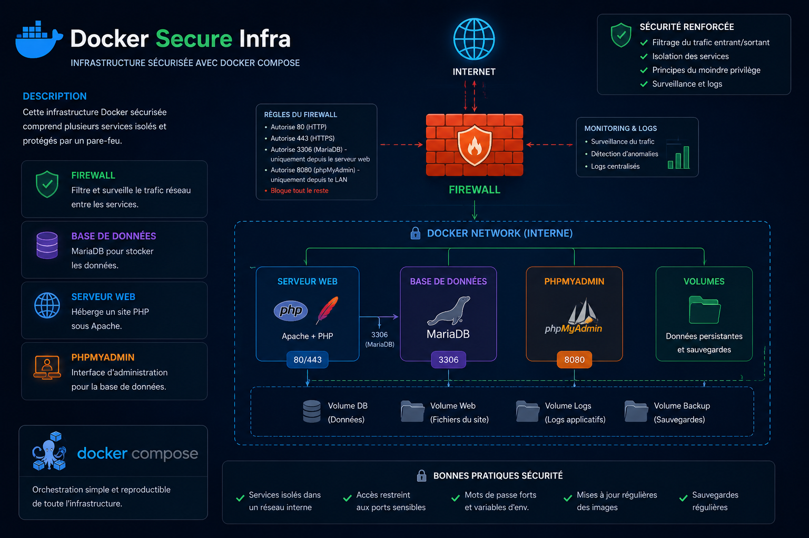

Projets Containers
Cluster Kubernetes (IaC)
Déploiement et configuration d’un cluster Kubernetes pour environnements de test et production.
- Kubernetes
- Shell / IaC
- Orchestration

Kubernetes High Availability App
Déploiement d’une application multimédia scalable avec haute disponibilité sur Kubernetes.
- Kubernetes
- HA architecture
- Services distribués

Dockerfile Examples
Collection d’exemples de Dockerfiles pour différents environnements applicatifs.
- Docker
- Container build
- Best practices

Docker Build & Push Pipeline
Automatisation du build et du push d’images Docker via pipeline CI/CD.
- Docker
- CI/CD
- Automation

Docker Compose Web Infrastructure
Infrastructure web complète avec PHP, MySQL et Nginx orchestrée via Docker Compose.
- Docker Compose
- Web stack
- Nginx / MySQL / PHP

Docker Security Lab
Infrastructure conteneurisée avec firewall, monitoring et durcissement de services web.
- Docker
- Security
- Firewall / monitoring

À propos de la conteneurisation
Ce domaine regroupe mes travaux autour de Docker et Kubernetes, incluant l’orchestration de services, les architectures distribuées et la mise en place d’environnements reproductibles.